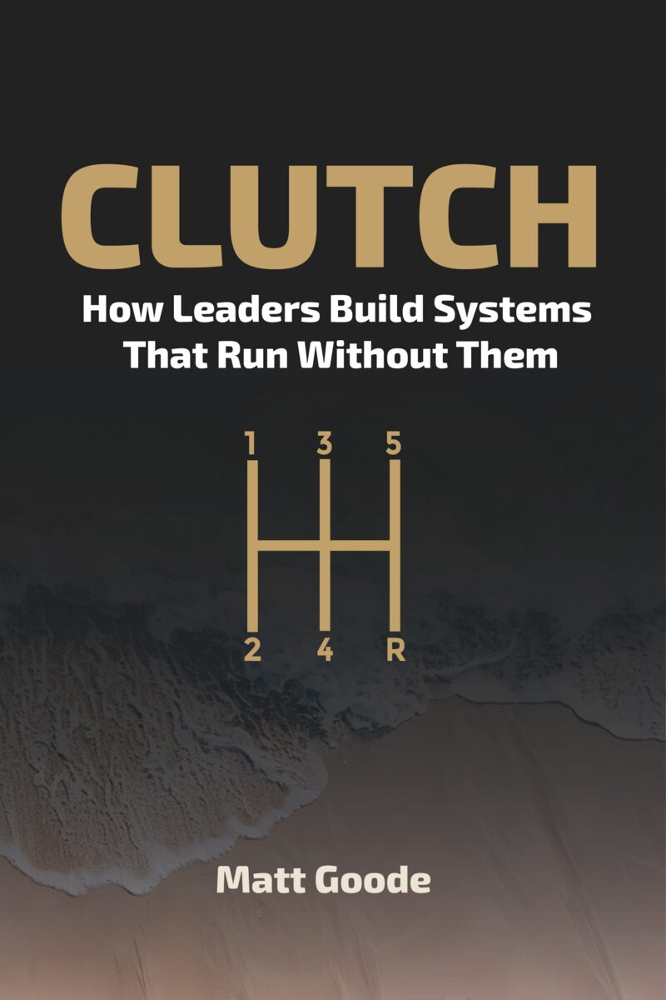
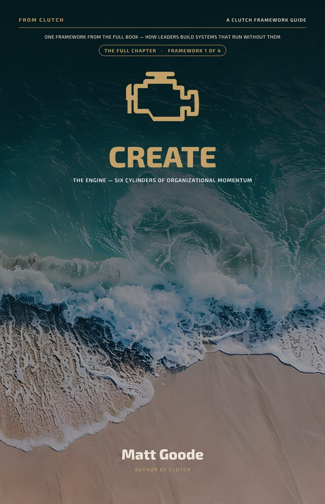
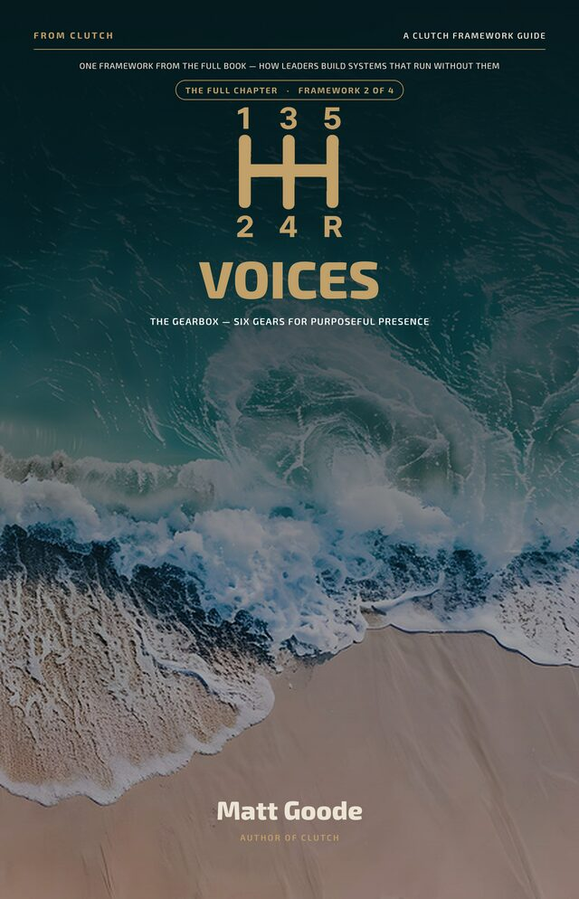
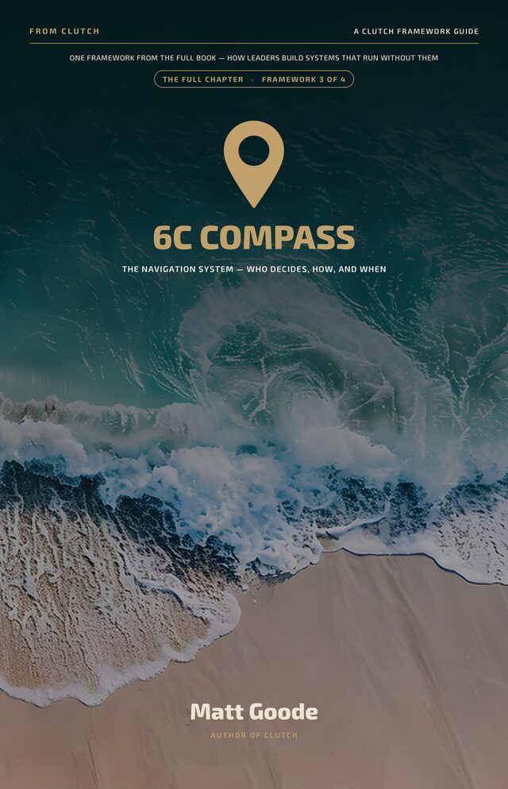
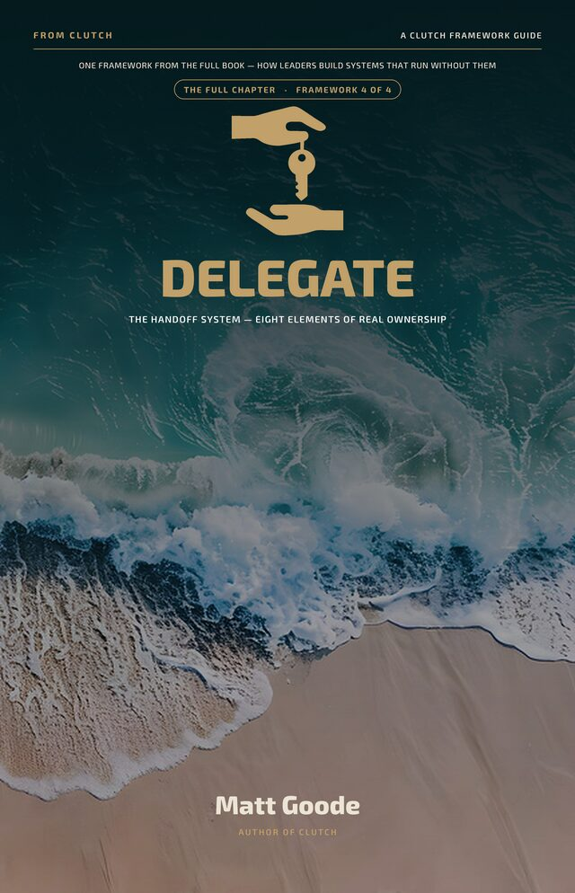

“Get the system in place so you can get out of the way.”
“Each framework chapter includes a list of diagnostic criteria, to assess where the leader and organization need to focus energy.”
Division director, US federal agency
Leadership · Business Nonfiction
How Leaders Build Systems That Run Without Them
"If your team can't move without you, that's not a sign you're indispensable. It's a sign you haven't finished the design."

The Storefront
Resources and eBooks built from the CLUTCH frameworks – read them the same day you start the book.
Four framework eBooks – $3.99 each

CREATE $3.99
VOICES $3.99
6C Compass $3.99
DELEGATE $3.99These are EPUB files, not PDFs. An EPUB reflows to fit whatever you are reading on, so the type stays comfortable on a phone, a tablet, a laptop or a Kindle. Every device below opens one, most of them without installing anything.
Open the file with a free reader like Thorium or Calibre. Or upload it to Google Play Books in your browser and read it there with nothing installed.
Double-click the file. It opens in Apple Books, which is already on your Mac, and syncs to your iPhone and iPad on its own.
Tap the download link, then tap the share icon and choose Books. The file lands in your Apple Books library and stays there.
Open the Google Play Books app, go to Library, tap Upload files and pick the EPUB. Free readers such as Moon+ Reader or Lithium work just as well.
Go to amazon.com/sendtokindle, sign in, and drag the file in. It appears on your Kindle and in the Kindle app within a few minutes. You can also email it to your @kindle.com address from an approved sender address. Copying it across by USB will not work, it has to go through Send to Kindle.
Stuck on any of this? Get in touch and I will make sure you can open your file.
About the Book
"What if the bottleneck in your organization isn't a people problem? It's a design problem."
Most leaders don't set out to become the bottleneck. It happens gradually. The team defers to you. You stay late to make sure things are done right. You loop yourself into decisions that didn't need you. Then one day you look up and nothing moves without you.
CLUTCH is the operating manual for leaders ready to change that. Built around four integrated frameworks: CREATE, VOICES, the 6C Decision Compass, and DELEGATE. Together they give you the language, the tools, and the system to build an organization that thinks and acts whether or not you're in the room.
"Bottlenecks are not personality flaws. They are design failures. And design failures can be fixed."
– CLUTCH, IntroductionThe fix isn't more effort. It's better infrastructure. Clear role definition drives 20 to 30% higher engagement. Real delegation cuts decision latency in half. When trust runs through the system, Stephen Covey's research suggests speed climbs and costs fall by as much as half. That's not inspiration. That's design.
Matt Goode spent more than twenty years in classrooms and consulting rooms watching what happens when leaders get the design right, and what it costs when they don't. One engineering firm he worked with was losing mid-level managers at roughly $65,000 a head. They built a simple development track. Turnover dropped to near zero.
The metaphor is a vehicle, because that's what a leadership system is: not a destination, but a machine that generates momentum.
CLUTCH is the book that comes from that work. For founders, operators, coaches, and anyone who has ever thought: if I could just get out of my own team's way.
Comparable to: Patrick Lencioni, Kim Scott, Michael Bungay Stanier.
The Architecture
CLUTCH is built on four integrated frameworks. Each one does a specific job. Together, they form a complete leadership operating system.
Culture, Relationships, Execution, Agility, Teaching, Ethics. The six cylinders that power everything else. If your engine is misfiring, no amount of gear-shifting fixes the problem.
Visionary, Operator, Independent, Coach, Encourager, Sculptor. Six leadership stances – not roles, not titles. The gearbox doesn't choose your destination. It determines whether you get there smoothly.
Command, Consultative, Collaborative, Consensus, Core Expert, Choice. Six modes for making decisions. The question isn't what to decide – it's how to decide who decides.
Define the Win, Establish the Way, List the Guardrails, Expect the Process, Give the Right Support, Agree on Checkpoints, Transfer Ownership, Encourage Growth. The GPS for ownership transfer.
Emotional Intelligence is the mechanism connecting all four systems. EQ is what enables smooth transitions between modes – the reason the title is CLUTCH. Without it, the engine revs and the wheels don't turn.
From the Book
Why it matters
It was never only about saving time and money.
Build the system right, and your company keeps running when you step away – so the next time your kid says hey watch this, you're watching. Not I gotta take this.
Reviews
Published on Amazon, quoted as written and linked so you can check them. Names withheld. These are reviews of the book; what clients say about the consulting is a separate thing.
“Each framework chapter includes a list of diagnostic criteria, to assess where the leader and organization need to focus energy.”
Division director, US federal agency
“The different mnemonic tools he created are very useful.”
Verified Amazon reviewer
On length, they disagree
Four stars“Sometimes the book feels repetitive in its style. So, there are a few sections that get tedious to read.”
Five stars“While these chapters appear long, they are easy to read and include reinforcing redundancy. The format allowed me to keep reading and not have to flip back and find information from earlier in the chapter.”
Same trait, opposite verdicts. The repetition is deliberate: each chapter is built to be consulted on its own, not only read through once. Whether that lands as support or as drag depends on which of those two things you came for.
Where to start
One reviewer found it hard to decide where to begin. Section 1.6 answers that, and routes by symptom rather than by chapter order.
What Readers Are Saying
Mostly advance readers who had the manuscript before publication, quoted with permission and kept anonymous. The first is from a reader who went on to post a review; the published reviews are above.
Already Read It?
If CLUTCH gave you language for something you'd been struggling to name, a few sentences on Amazon does more for it than any ad I could buy. It takes two minutes.
Follow the Work
Your organization is growing faster than your leadership can. CLUTCH is the system that closes that gap. Every Tuesday: the frameworks, diagnostics, and hard questions behind the book – applied to what's actually breaking. Free.
Where the professional work lives. If you're interested in leadership development, executive coaching, the GDC frameworks in practice – or you want to know when CLUTCH drops – LinkedIn is the place to follow. I publish a weekly newsletter.
Launch updates, leadership framework content, and news for CLUTCH only – nothing from the fiction projects.
Teams and schools
A book on every desk does very little on its own. A book on every desk plus a ninety-minute session on the framework the team is actually failing at does quite a lot.
Bulk copies for leadership teams, faculty groups, cohorts and conference audiences, with a facilitated session attached if you want one. Tell me the headcount and what is breaking and I will quote both.
Next step
The book is the long version.
Thirty minutes is the short one.
Bring the thing that keeps landing back on your desk. We will work out together whether it is a people problem or a design problem. It is almost always a design problem.
Book a call →Prefer email? matt@thatsgoodedesign.com